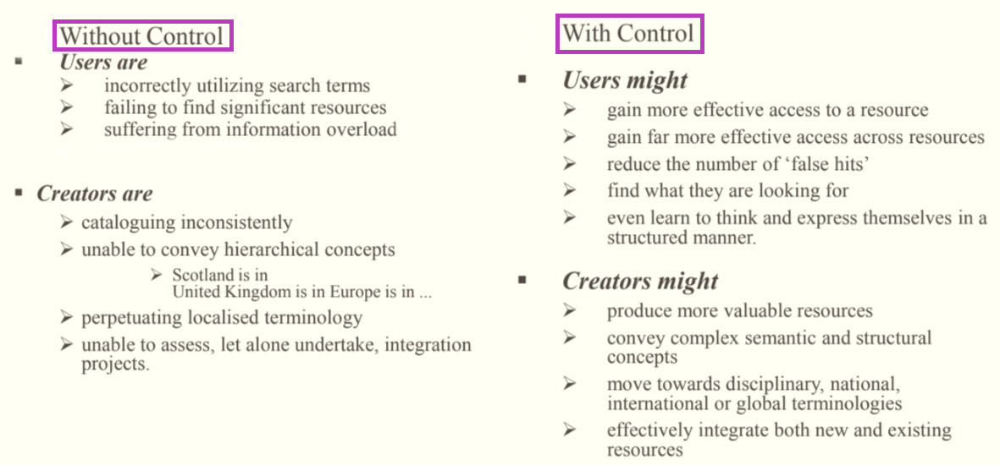

CONTROLLED VOCABULARY
Paper-M-108
21st May 2023
What Will You Learn - Part A?
WHAT IS VOCABULARY?
Vocabulary is a set of terms (words, codes, etc.) that are used in a specific community
It provides a mechanism for communication (written, oral, or electronic) as the meaning of terms are known & agreed upon by the community members
When a vocabulary is formally managed, it becomes Controlled Vocabulary. Where managed means the terms are stored & maintained using agreed-upon procedures
Procedures should exist for adding terms, modifying terms, & more rarely, deprecating terms from a controlled vocabulary
DIFFERENCES BETWEEN INDEX & VOCABULARY?
| Indexes | CVs | |
|---|---|---|
| End product | index | term list |
| Use | content locator | content tagging, website navigation, search enhancement |
| Project time | weeks | months |
| Methodology | reading | research |
DIFFERENCES BETWEEN INDEX & VOCABULARY? (Cont.)
- Indexes and CVs are intimately connected
- For example, it is often the case that for large or long-term indexing projects, such as journal or newspaper indexes, a CV is created first to ensure consistency in indexing by multiple indexers over long time spans
CONTROLLED VOCABULARY (CV)
CV is a carefully selected list of words and phrase, which are used to tag units of information so that they may be more easily retrieved by a search
The terms are chosen by and organized by trained professionals (including Librarians and information scientist) who posses expertise in the subject area
CV terms can accurately describe what a given document is actually about, even if the terms themselves don not occurs within the text
Fully developed CV systems are LCSH, Sears List, Thesaurus etc.
CONTROLLED VOCABULARY (Cont.)
In other words, CV is a collection of terms that are:
- Accepted: Terms must adhere to community practices
- Defined: Terms are precisely characterized. Typically, this means the terms have rigorous definitions
- Managed: In general, there will be a body of experts that create and maintain the CV. The maintenance of CV will involve periodic review, addition of new terms, modification of terms, and occasionally deprecation of terms
CONTROLLED VOCABULARY (Cont.)
- For example in the LCSH (a subject heading system that uses a controlled vocabulary), authorized terms- subject heading in this case - have to be chosen to handle choice between variant spelling of the same words, choice among the scientific and popular terms and choice between synonyms among other different issues
PURPOSE OF CV
CV can serve several different purposes:
It can help users to find data (also known as a discovery vocabulary)
It can assist in the interpretation of data (also known as usage vocabulary)
It can provide human-understandable meaning (also known as semantic vocabulary)
It can produce machine-readable format information (also known as syntactic vocabulary)
PURPOSE OF CV (Cont.)
CV provide these abilities by:
- Establishing the permissible terms to be used
- Maintaining the proper and agreed-upon spelling of the terms
- Clarifying terms for those who are new to the community
- Eliminating the use of arbitrary terms that can cause inconsistencies and confusion
From the above we can say that CV ensure consistencies in indexing, tagging or categorizing and to guide the user where the desire information is
WITH AND WITHOUT CV
Fig. 1: With & Without CV
CHARACTERISTICS OF CV
Most important characteristics of CV is relationship
Terms in CV are related in certain ways:
- Equivalence Relationship
It is the most basic term relationship in synonyms
It is important to note that context is important in determining synonyms
Example, if you use “automobiles” on your homepage & “cars” on next page, users might get confused. Users might start to wonder if there is a difference between the two terms. Instead you choose “automobiles” & don’t use “cars”.
CHARACTERISTICS OF CV (Cont.)
So, using “automobiles” as “preferred term” & “cars” as variant term that is representing the same concept
There are many examples where alternate terms are used:
- Synonyms (two words with the same meaning, like “jeans” and “dungarees”)
- Homonyms (words that sound the same, but have different meanings, like “bank” the financial institution and “bank” the side of a stream or river)
- Common misspellings
- Changes in content (e.g., countries that change their name or have multiple spellings)
CHARACTERISTICS OF CV (Cont.)
- Identifying “Best Bets” or the most popular pages associated with a certain term
- Connecting a woman’s married name to her maiden name
- Connecting abbreviations to the full word (e.g., NY and New York, the chemical symbol Si with the element Silicon)
Types of Equivalence Relationship:
- There are 2 types of synonym equivalence lists - Synonym rings: They are used in searching behind the scenes as a way to connect various terms of a concept. EG. When someone searches for “Si”, give them all documents with both “Si” & “Silicon”
CHARACTERISTICS OF CV (Cont.)
Types of Equivalence Relationship (Cont.)
- Authority files: When you need to display one of these terms in your navigation and pick one to be a preferred term, then you have an authority file
- Hierarchical Relationship
Terms display hierarchical relationship when one term is broader in meaning than its child terms (which has a narrower meaning)
Pairs of the terms are represented in their super ordinate & subordinate status
CHARACTERISTICS OF CV (Cont.)
Super ordinate term (BT) representing the whole while the subordinate term (NT) representing a member or a part
EG. LIBRARY USERS
- BT Persons
- NT Internet access for library users
- Library catalogs and users
It can help you formulate your homepage navigation. It could improve your searching and browsing. It can help users broaden and narrow their search results quickly by showing them where each set of results fits into the site’s hierarchy
CHARACTERISTICS OF CV (Cont.)
- Associative Relationship
It denotes the relationship between the term that is neither hierarchical nor equivalence
Yet the terms are mentally associated to such an extent that link between them should be made explicit in CV and revel alternative terms that could be used in indexing or retrieval
It is very difficult to define the relationship between the term and therefore to determine between a pairs of terms, some guidelines are follow:
CHARACTERISTICS OF CV (Cont.)
The Associative terms are divided into two categories:
- Terms belonging to the same category. For example Sibling with overlapping meaning, such as ‘Ship’ and ‘boats’
- Terms belong to different categories. The term should be implied when other is used in indexing. For example, an action or product and product of the action. Such as Programming <-> Software
CV CATEGORY & TYPES
To many people, the English language is a well-known vocabulary. We have many ways of representing the terms in the English language. For example, if we want to figure out what a specific word means we might consult a glossary; if we want to know the origin of a term we might consult a dictionary; and if we want to know how the term relates to other terms we might consult a thesaurus. We also need to recognize that the meaning of terms may change through time. Generations use terms in different ways (cool in one generation means a low temperature, while cool in another is a positive adjective).
CV CATEGORY & TYPES (Cont.)
- To enable formal management, a controlled vocabulary can be organized in several ways. There are three broad categories of controlled vocabularies:

CV CLASSIFICATION BY FUNCTIONALITY

FLAT CV TYPES
- Authority Files
These are the lists of terms that are used to control the variant names for an entity or the domain value for a particular field
EG. names for countries, individuals, organizations
Sometimes within a catalog there are different names or spellings for only one person or subject. This can bring confusion since researchers may miss some information. Authority control is used by cataloguers to collocate materials that logically belong together but which present themselves differently.
FLAT CV TYPES (Cont.)
Records are used to establish uniform titles which collocate all versions of a given work under one unique heading even when such versions are issued under different titles, such as different spelling, pen names etc. The unique header can guide users to all relevant information including related or collocated subjects. Authority records can be combined into a database and called an authority file and maintaining and updating these files as well as “logical linkages” to other files within them is the work of librarians and other information cataloguers.
FLAT CV TYPES (Cont.)

FLAT CV TYPES (Cont.)
- Glossaries
A glossary is a list of terms, usually with definitions
Terms may be from a specific subject field or from a particular work
Terms are defined within a specific environment and rarely include variant meanings
EG. Environmental Protection Agency (EPA), Terms of the Environment, Glossary of Library and Information Science
FLAT CV TYPES (Cont.)
- Dictionaries
Dictionaries are alphabetical lists of words and their definitions
Variant senses are provided where applicable
Dictionaries are more general in scope than are glossaries
They may also provide information about the origin of a word, variants
(by spelling and morphology), and multiple meanings across disciplines - While a dictionary may also provide synonyms and through the definitions, related words, there is no explicit hierarchical structure or attempt to group them by concept
- EG. Oxford English Dictionary, Subject Dictionary
FLAT CV TYPES (Cont.)
- Gazetters
A gazetter is a list of place names
Traditional gazetters have been published as books or have appeared as indexes to atlases
Each entry may also be identified by feature type, such as river, city, or school